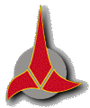
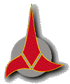

| Star Trek: The Galactic War | ||
 |
The year is 2385, and the Dominion war has
ended. Seven years ago the combined forces of the Federation, Klingon
Empire, and Romulan Star League defeated the Dominion, destroying all but
a small amount the Cardassian species in the process. Finally, the Alpha
Quadrant was at peace..... But, as is always true, this peace could not last. After a few months bickering began between to Klingons and Romulans about just how much of the now empty space would be who's. The bickering was just that, for a year or two, but by 2382 it had become an all out war. The Federation, allied with both, chose not to get involved. This lack of action proved to work in the opposite way of what the Federation had hoped. In 2384 both the Romulans and Klingons declared war on the Federation as well as each other, and as a response the Federation declared war on them. And now the great battle has begun, the Federation led by President Felton, the Klingons lead by Chancellor Bowmak, and the Romulans led by Praetor Serena. The three super powers of the Alpha Quadrant clash in a Galactic War the likes never before seen...     This webpage designed by Jeff Joyner of the Joyner Web Design Service. | |